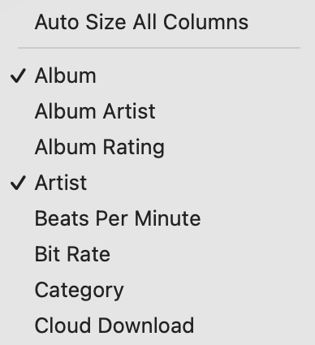
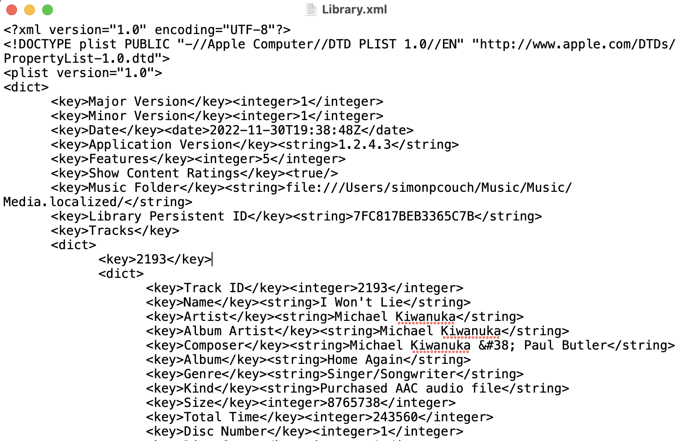
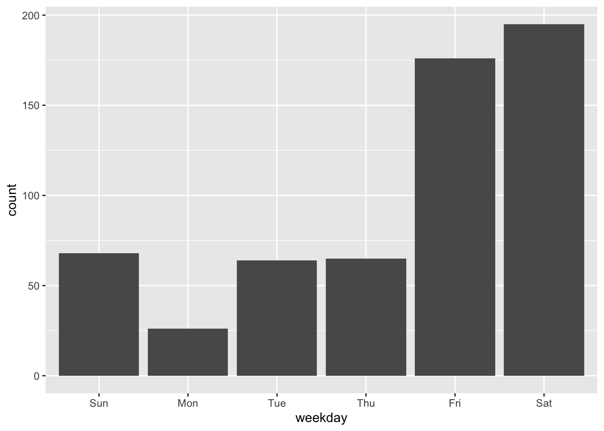

Aside from exchanging playlists with my partner every once in a while, I’m not much of a Spotify user. Around this time every year, though, all of my friends start posting their Spotify Wrapped, and I get jealous.
I do get the Wrapped for Artists report from my high school band, and I’m pleased to report we had 13 total listens this year. Not quite the dopamine hit I’m looking for, though.
My preferred way of collecting music is via the Music app (formerly iTunes) on my computer. As in, .mp3s. I’m a simple feller.
I noticed at some point a while back that when you right click the top bar, a dropdown appears with all of the different variables that you can display on your app screen and sort by (most notably, play count):

So, this information is somewhere.
You already know:
library(tidyverse)Finding and cleaning the data
Turns out, the Apple folks made tracking down “the data” pretty straightforward. Just click
Music app > File > Library > Export LibraryA pop-up will appear that allows you to pick where to save the Library.xml file. I write “the data” in quotes because it’s an .xml file. Yikes.

The nesting in this file is pretty gnarly, but the xml2 package provides some slick tools to read them into R and convert them to a list. Then, tibble::enframe() that list into a data frame, and tidy away. I won’t belabor that process here, but the source code for that tidying is available in an R package on my GitHub at https://github.com/simonpcouch/wrapped. You can install the package by running:
devtools::install_github("simonpcouch/wrapped")The wrap_library() function takes in the path to your Library.xml file, and the year of interest, and outputs a tidy data frame with your listening data. A la:
wrap_library("Library.xml", 2022L)The source code is here, for those curious.
I also packaged up some example output of this function with the wrapped data frame loaded with the package. It contains my listening data from 2022, which is a bit borked. 1
library(wrapped)
wrapped
## # A tibble: 594 × 8
## id track_title artist album genre date_added skip_count play_count
## <int> <chr> <chr> <chr> <chr> <date> <dbl> <dbl>
## 1 11452 Bag Of You Mahal… Bag … R&B/… 2022-11-11 3 102
## 2 11040 The Internet Viole… If I… Indi… 2022-08-04 2 87
## 3 11041 Settle Viole… If I… Indi… 2022-08-04 2 87
## 4 11170 Half My Life Viole… Lone… Pop 2022-09-08 4 80
## 5 11317 The Problem Song Valley The … Indi… 2022-10-08 NA 79
## 6 10976 WASTE TIME Gwen … PHASE R&B/… 2022-07-21 3 74
## 7 10899 Good Things Ken Y… Ceru… Sing… 2022-06-04 1 61
## 8 11268 pennies (voice mem… Tiny … penn… Sing… 2022-10-01 1 51
## 9 11169 When I Come Home Viole… Lone… Pop 2022-09-08 1 50
## 10 10907 Small Doses Ken Y… Ceru… Sing… 2022-06-04 NA 49
## # … with 584 more rowsNote that the data are already arranged in descending order of play count. I found myself arrange()ing by desc(play_count) after every summary, so though I’d skip that step when I could.
For easier printing in this blog post, I’ll rearrange this data to show the most commonly noted output:
wrapped <-
wrapped %>%
select(-id) %>%
relocate(date_added, skip_count, .after = everything()) %>%
relocate(play_count, .before = everything())
wrapped
## # A tibble: 594 × 7
## play_count track_title artist album genre date_added skip_count
## <dbl> <chr> <chr> <chr> <chr> <date> <dbl>
## 1 102 Bag Of You Mahalia Bag … R&B/… 2022-11-11 3
## 2 87 The Internet Violet Ski… If I… Indi… 2022-08-04 2
## 3 87 Settle Violet Ski… If I… Indi… 2022-08-04 2
## 4 80 Half My Life Violet Ski… Lone… Pop 2022-09-08 4
## 5 79 The Problem Song Valley The … Indi… 2022-10-08 NA
## 6 74 WASTE TIME Gwen Bunn PHASE R&B/… 2022-07-21 3
## 7 61 Good Things Ken Yates Ceru… Sing… 2022-06-04 1
## 8 51 pennies (voice memo) Tiny Habits penn… Sing… 2022-10-01 1
## 9 50 When I Come Home Violet Ski… Lone… Pop 2022-09-08 1
## 10 49 Small Doses Ken Yates Ceru… Sing… 2022-06-04 NA
## # … with 584 more rowsAnalyzing it
Once the data is in a tidy format, a little bit of dplyr goes a long way.
The blessing of posting on my own platform, as well, is that I can annotate the results with fun commentary that no one cares about.
Top songs:
wrapped %>%
select(track_title, artist, play_count) %>%
head(10)
## # A tibble: 10 × 3
## track_title artist play_count
## <chr> <chr> <dbl>
## 1 Bag Of You Mahalia 102
## 2 The Internet Violet Skies 87
## 3 Settle Violet Skies 87
## 4 Half My Life Violet Skies 80
## 5 The Problem Song Valley 79
## 6 WASTE TIME Gwen Bunn 74
## 7 Good Things Ken Yates 61
## 8 pennies (voice memo) Tiny Habits 51
## 9 When I Come Home Violet Skies 50
## 10 Small Doses Ken Yates 49I bought that Mahalia song probably three weeks ago. I recently went on a road trip that took about 40 hours of driving, and this song was repeated 5 times on a 40-song playlist that I spun most of the drive. Even then, I was surprised to see this up top.
And, yall! Violet Skies! She opened for another group that my partner and I saw recently, and I didn’t know who she was before that show, but wow.
Top artists:
wrapped %>%
group_by(artist) %>%
summarize(play_count = sum(play_count, na.rm = TRUE)) %>%
arrange(desc(play_count)) %>%
head()
## # A tibble: 6 × 2
## artist play_count
## <chr> <dbl>
## 1 Violet Skies 594
## 2 Ken Yates 326
## 3 Watchhouse 320
## 4 Gwen Bunn 269
## 5 JID 177
## 6 Seaforth 174:)
Top genres:
One of my first steps after buying a new record is to edit it’s metadata to fit into one of a few pre-defined genres. Every categorization is likely a hot take, but it does make for a nice summary:
wrapped %>%
group_by(genre) %>%
summarize(play_count = sum(play_count, na.rm = TRUE)) %>%
arrange(desc(play_count)) %>%
head()
## # A tibble: 6 × 2
## genre play_count
## <chr> <dbl>
## 1 Singer-Songwriter/Folk 1714
## 2 Indie/Alternative 987
## 3 R&B/Soul 805
## 4 Country 547
## 5 Rap/Hip-Hop 251
## 6 Pop 222Pickin’ and grinnin’.
It also looks like I’ve forgotten to re-genre some of those albums, resulting in a pretty steep play count dropoff after the first six.
wrapped %>%
group_by(genre) %>%
summarize(play_count = sum(play_count, na.rm = TRUE)) %>%
arrange(desc(play_count)) %>%
slice(7:10)
## # A tibble: 4 × 2
## genre play_count
## <chr> <dbl>
## 1 R&B 109
## 2 Jazz 44
## 3 Blues 19
## 4 Hip-Hop/Rap 13Top albums:
wrapped %>%
group_by(album, artist) %>%
summarize(play_count = sum(play_count, na.rm = TRUE), .groups = "drop") %>%
arrange(desc(play_count)) %>%
head()
## # A tibble: 6 × 3
## album artist play_count
## <chr> <chr> <dbl>
## 1 If I Saw You Again Violet Skies 372
## 2 Watchhouse (Duo) Watchhouse 320
## 3 Cerulean Ken Yates 303
## 4 PHASE Gwen Bunn 269
## 5 Lonely Violet Skies 222
## 6 The Forever Story JID 177I was surprised to see that Watchhouse only made two appearances in these results, but, I’ll take it. Grateful for all of these albums.
Bonus points
Unlike Spotify, I do not have graphic design chops to display my summaries with. As for UI, it may seem that all I have in my toolkit is a call to an HTML-pretty-printing library, and that’s true. I do have the raw data, though, so I may as well flex on being able to analyze this myself.
Hiding things
Just for funsies, I divided my play counts for songs of one genre by three (and took the floor() function on the output).
Any statisticians in the crowd? Scavenger hunt: which genre was that?
Most skipped
The Music app stores all sorts of things about what/how I listen to music, and one of them I thought would be interesting is my most skipped song.
wrapped %>%
arrange(desc(skip_count)) %>%
head() %>%
select(1:3)
## # A tibble: 6 × 3
## play_count track_title artist
## <dbl> <chr> <chr>
## 1 28 Jupiter Violet Skies
## 2 17 Over The Valley Violet Skies
## 3 39 Best of the Broken Things Ken Yates
## 4 6 Born On Valentine's Day Violet Skies
## 5 80 Half My Life Violet Skies
## 6 30 What I Get for Loving You SeaforthFrom looking at these, I’m guessing the most prominent ones here are the songs I like least on the albums I like the most; if I shuffle the albums these songs are from, I can definitely imagine myself skipping several of these.
New music friday
One of my favorite Friday morning traditions is to take half an hour to try and track down any new music from my favorite artists. I often, though, don’t take the time to wake up before starting work and make that happen. I wondered how pronounced that effect would be in this data:
wrapped %>%
mutate(weekday = wday(date_added, label = TRUE)) %>%
ggplot(aes(x = weekday)) +
geom_bar()
Yeah!!! Looks like I decide to sleep in most Fridays, but do tend to get my redemption the day after.
Spotify abstainers rejoice
While putting together this post, I’ve developed an interest in finding a music listening app that surveils me even more closely. A listen-by-listen level of observation with this data would be so fun to play around with. Alas.
Thanks for dropping by. If you’re also an R and Music app user, give the {wrapped} package a go, and let me know if you share your analyses anywhere!
Footnotes
(1) I switched jobs in May, and migrated computers shortly after. I did so in a silly way, and lost all of the metadata for my music library. So, almost all of my songs say they were added to my library in mid-May. So, for simplicity, I’ve kept only songs that I’ve purchased since that date, and my listening statistics thus only account for the latter half of the year. So it goes—I’m excited for next year’s output!